Real-time Sobel Video Co-Processor
A 3×3 convolution video co-processor that runs a live image filter in silicon: Sobel edge detection, plus sharpen, blur, emboss and threshold, applied to a 720p HDMI stream and shown as a split-screen RAW │ FILTERED view on a real monitor. The kernel is written in Vitis HLS and pipelined to II=1 (one pixel in and one pixel out every clock), then dropped straight into a hand-written Verilog HDMI pipeline with no soft-CPU and no AXI interconnect. Two buttons switch the source image and the filter live.
| Target Device | Puzhi PA200T-StarLite · Artix-7 XC7A200T (xc7a200tfbg484-2) · 134,600 LUTs · 740 DSPs · 365 BRAM tiles |
| Toolchain | AMD Vitis HLS 2025.2 · AMD Vivado 2025.2 · g++ host validation |
| Kernel | Line-buffer 3×3 streaming convolution, sobel_filter(), one 128×128 frame per ap_start |
| Interfaces | src / dst = AXI4-Stream · mode / threshold = ap_none · block control = ap_ctrl_hs |
| Filters | PASS · SOBEL · SHARPEN · BLUR · EMBOSS · THRESHOLD (run-time selectable) |
| Arithmetic | 8-bit integer (ap_uint<8>), shift-add operators, saturated to [0,255], with zero multipliers |
| Clock | Pixel 75.0 MHz / serial 375 MHz (MMCME2, Fvco 750 MHz, 5× TMDS ratio) |
| Throughput | II = 1 · 74.3 Mpix/s · ~4,400 fps at 128×128 (kernel closes ≈140 MHz) |
| On-chip Power | ≈ 0.44 W (0.297 W dynamic · 0.141 W static) |
Live Demonstration
The clip below is the design running on hardware. The left half is the original image, the right half is the filtered output, live. KEY0 cycles the source image (six are stored on-chip) and KEY1 cycles the filter, and the right half redraws each time a button is pressed.
What you are seeing
The filter runs directly on FPGA hardware. Six grayscale images are stored on-chip, and two buttons drive the demo:
- KEY0 cycles the source image (1–6), fetched from block RAM.
- KEY1 cycles the filter: PASS, SOBEL, SHARPEN, BLUR, EMBOSS, THRESHOLD.
- The selected image streams through the II=1 kernel and lands in a second buffer.
- The HDMI path paints RAW (left) │ FILTERED (right) with the yellow on-screen label, updating in real time.
Video is muted and loops; use the controls to pause or scrub.
Because the kernel sustains one pixel per clock, the filtered half keeps up with the video with no frame drops. The Sobel mode below pulls the puppy's outline, eyes and individual bits of fur out of the raw photo:
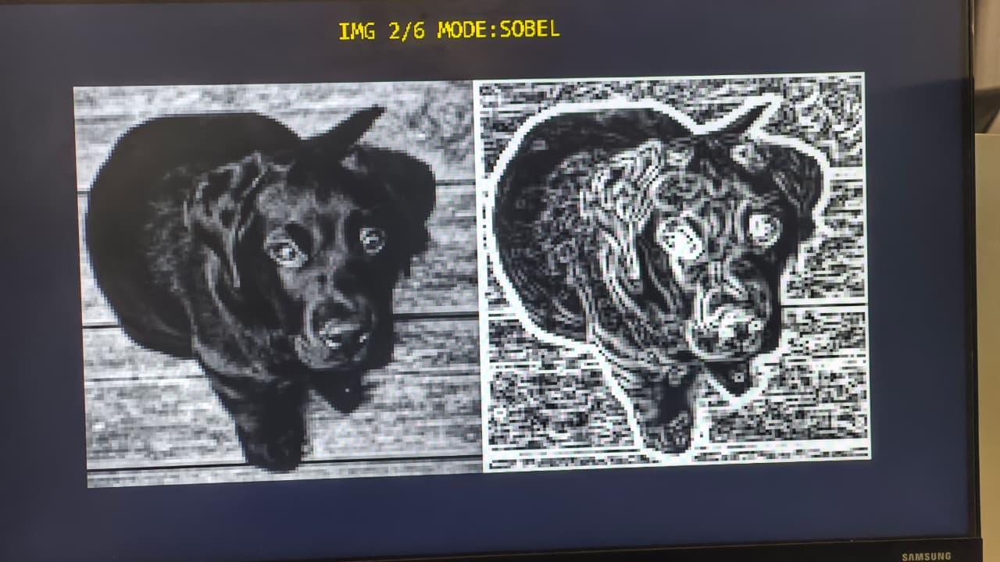
|Gx| + |Gy| rendered as white edges. The yellow IMG n/6 MODE:NAME label is drawn in fabric from a generated 8×16 ASCII font.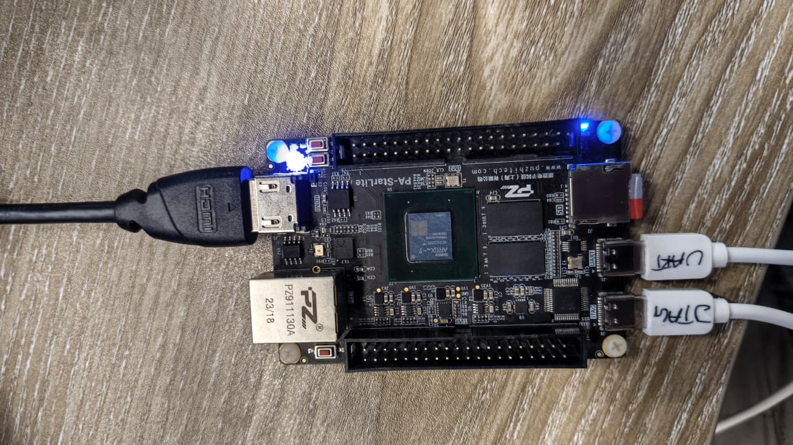
The Six Filters
KEY1 walks through six modes on whatever image is loaded: nothing reloads, the kernel simply re-runs with a different mode value. Each mode is a fixed 3×3 operator built entirely from shifts and adds: no multiplies anywhere, which is exactly why the DSP count reads zero. The same puppy through all six modes (left = raw, right = filtered):
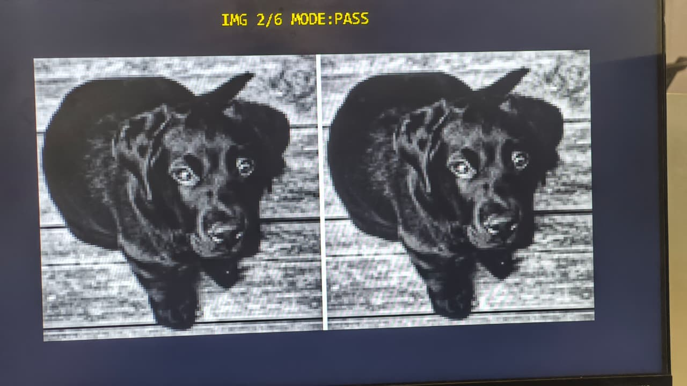
|Gx|+|Gy|, edges as white outlines.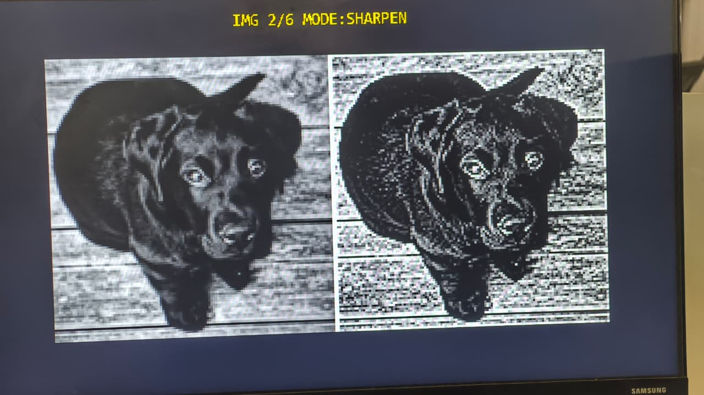
5·c − 4-neighbours, crisper detail.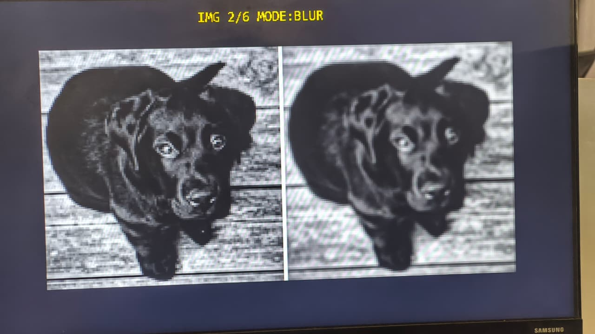
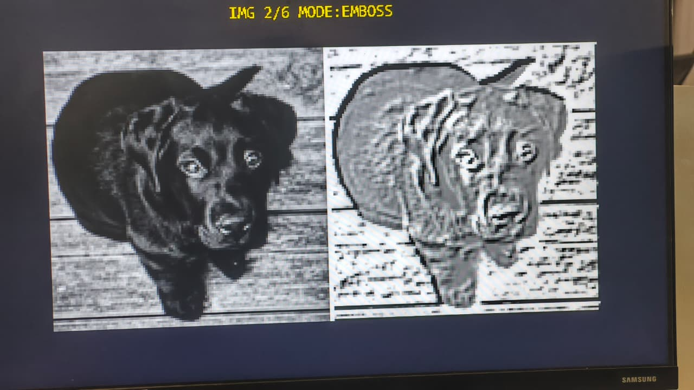
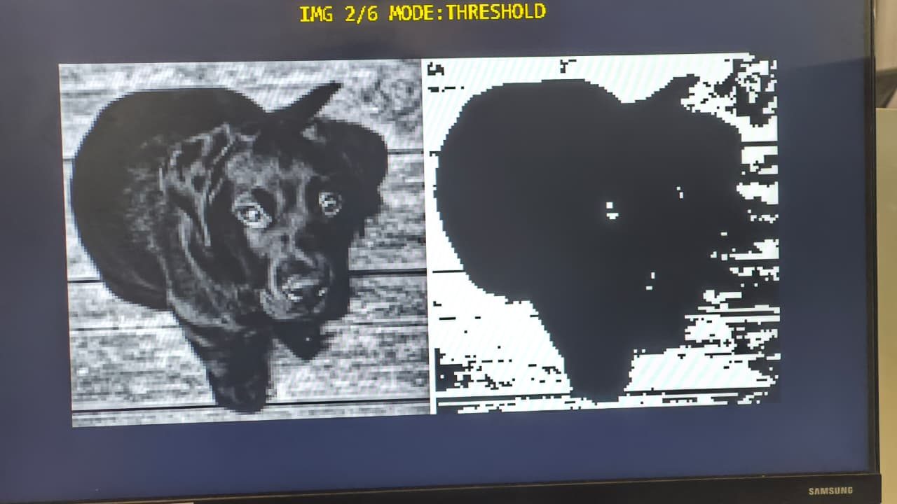
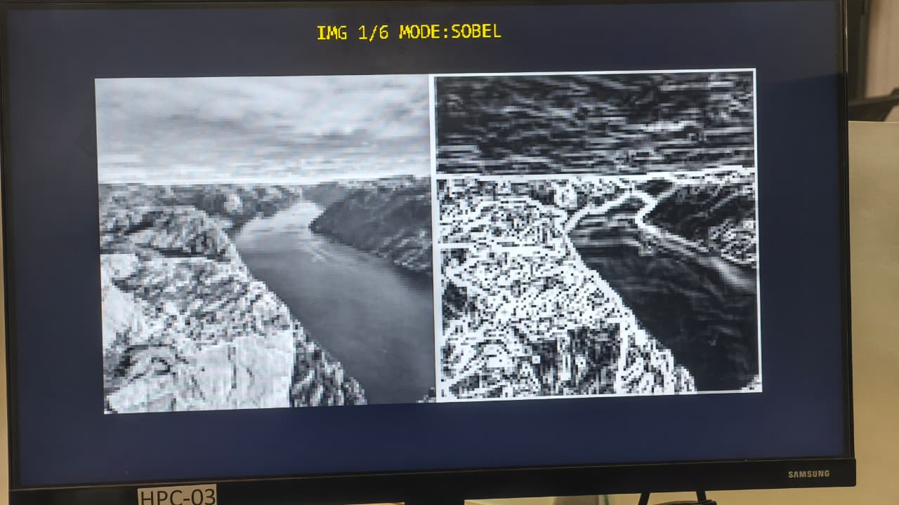
Streaming at II=1
The naive convolution re-reads all nine neighbours for every output pixel, so it stalls on memory and never keeps up with the pixel clock. The fix is the classic line-buffer stencil: keep the previous two rows on-chip so all nine taps are already present the moment a new pixel streams in.
Two line buffers hold rows r-1 and r-2; each new pixel slides into a fully-partitioned 3×3 register window, so all nine taps are available in the same cycle. dependence type=inter false tells the scheduler the line-buffer reads and writes don't collide, which is what lets the initiation interval drop to 1.
- Two line buffers hold the previous two rows (r-1, r-2). Nothing is read from memory twice.
#pragma HLS ARRAY_PARTITION type=completeon the window, so all nine taps are readable in one cycle.#pragma HLS PIPELINE II=1with#pragma HLS dependence variable=line0/line1 type=inter false; the false-dependence pragma is what drops the initiation interval to 1.- Borders are zero-padded; the loop runs (H+1)×(W+1) so the extra row and column flush the last output, since the window trails the input by one row and one column.
void sobel_filter(hls::stream<pix_t> &src, hls::stream<pix_t> &dst,
ap_uint<3> mode, pix_t threshold) {
#pragma HLS INTERFACE mode=axis port=src
#pragma HLS INTERFACE mode=axis port=dst
#pragma HLS INTERFACE mode=ap_ctrl_hs port=return
pix_t line0[IMG_W]; // row r-1 ─┐ two line buffers hold
pix_t line1[IMG_W]; // row r-2 ─┘ the previous two rows
int win[3][3]; // 3×3 window, all 9 taps in registers
#pragma HLS ARRAY_PARTITION variable=win type=complete dim=0
COL: for (int c = 0; c < IMG_W + 1; c++) {
#pragma HLS PIPELINE II=1
#pragma HLS dependence variable=line0 type=inter false
#pragma HLS dependence variable=line1 type=inter false
bot = (r < IMG_H) ? (int)src.read() : 0; // one pixel in ...
mid = line0[c]; top = line1[c]; // read the two rows above
line1[c] = mid; line0[c] = bot; // shift columns down one row
// ... slide the 3×3 window left, insert the new right-hand column ...
if (r >= 1 && c >= 1)
dst.write(apply_op(win, mode, thr)); // ... one pixel out
}
}The result is a fixed one-line-plus-a-few-cycles latency and full video-rate throughput. It was checked twice before it went near the board: a self-checking testbench compares every mode bit-exact against an independent 2-D reference, and the same C was compiled with g++ (plus shim headers) to eyeball the outputs on a laptop before Vitis was even involved.
System & Toolflow
The board has no hard CPU and the vendor demos ship no MicroBlaze/AXI base, so the exported HLS IP is wired into a flat-Verilog HDMI pipeline by hand. Six grayscale images are baked into one block RAM ($readmemh); a small FSM (filter_driver) pulls the selected image out, streams it through the kernel over AXI4-Stream, and writes it into a second buffer. The HDMI read path composites the divider, the RAW tile, the FILTERED tile and the yellow text label before the TMDS serializers.
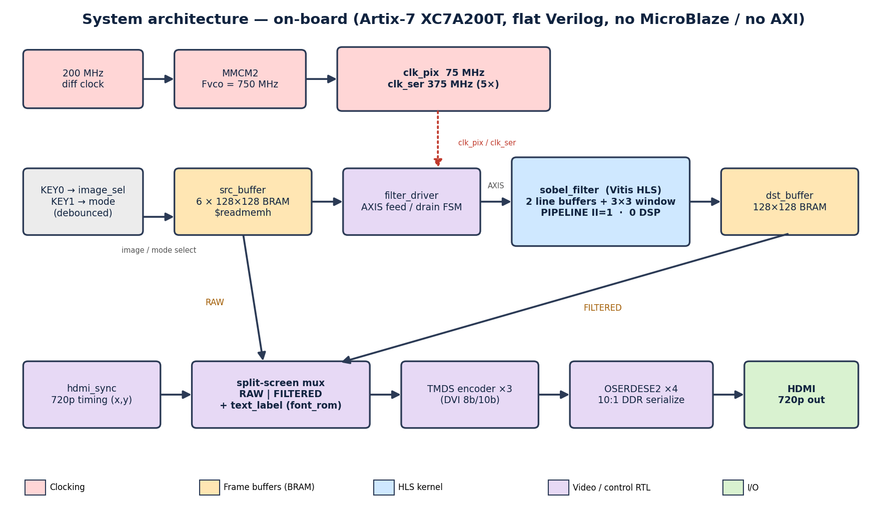
filter_driver streams src_buffer → sobel_filter → dst_buffer once per change; the HDMI path muxes RAW │ FILTERED plus the text label into the TMDS/OSERDES output. Flat Verilog, no MicroBlaze, no AXI interconnect.The kernel itself was taken from C to bitstream through the standard Vitis HLS steps in order: C sim, synthesis, C/RTL co-sim (the step that actually catches scheduling mistakes), then IP export, before entering Vivado as plain RTL:
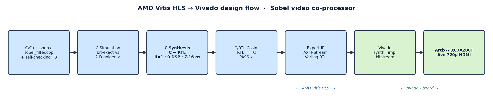
HLS Synthesis (Vitis HLS 2025.2 · xc7a200t-fbg484-2)
| Metric | Value |
|---|---|
| Target clock | 10.00 ns (uncertainty 2.70 ns) |
| Estimated clock | 7.162 ns ⇒ Fmax ≈ 139.6 MHz (~1.9× above the 74.28 MHz pixel clock) |
| Pixel-loop II | 1 (one pixel in / one pixel out per clock) |
| Frame latency | 16,779 cycles ≈ 0.23 ms/frame @ 74.28 MHz (~4,400 fps at 128×128) |
| DSP48E1 | 0 (shift-add operators, no multipliers) |
| BRAM18K | 2 (line0, line1 line buffers) |
| FF / LUT (kernel) | 447 / 1,429 (~1% of the device) |
| C/RTL cosim | PASS (Verilog / xsim) |
Hardware & Results
Placed and routed, the full design (kernel, FSM, both frame buffers, HDMI serializers and font overlay) barely registers on a part this big. Timing closes with margin on all three checks, and the whole chip draws under half a watt.
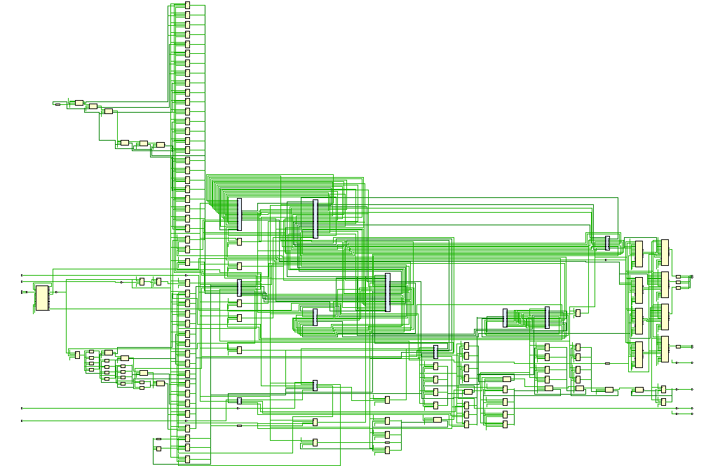
top_sobel: source BRAM, filter_driver, the HLS kernel, destination BRAM, the split-screen mux and the TMDS/OSERDES HDMI output.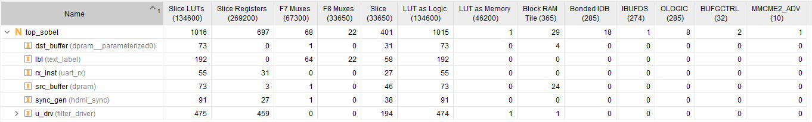
filter_driver, buffers, label, HDMI sync).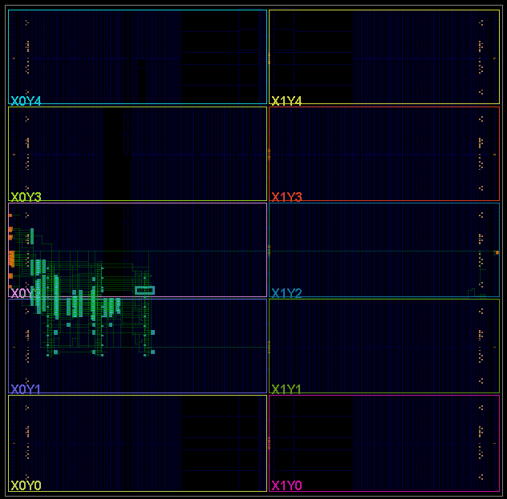
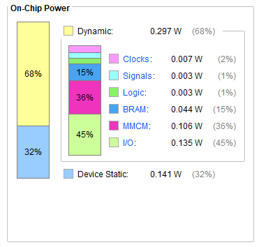
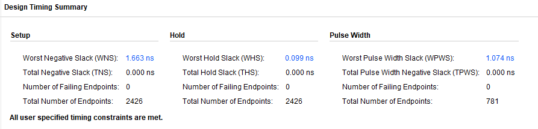
Implementation Summary
| Resource / Metric | Used / Device |
|---|---|
| Slice LUTs | 1,016 / 134,600 (~0.75%) |
| Slice Registers | 697 / 269,200 (~0.26%) |
| Block RAM tiles | 29 / 365 (~7.9%) · 24 source (6 images) · 4 destination · 1 kernel |
| DSP48E1 | 0 / 740 (0%) |
| MMCM / BUFG | 1 / 2 |
| Timing | All met · WNS +1.663 ns · WHS +0.099 ns · WPWS +1.074 ns · 0 failing (2,426 endpoints) |
| On-chip Power | ≈ 0.44 W (0.297 W dynamic · 0.141 W static) |
Design Notes
The clocking fix
The pulse-width slack did not come for free. The first build clocked the TMDS serializer at 650 MHz, which was wrong on two counts: it broke the BUFG minimum-period on the -2 part, and it is simply not the right number: for 10:1 DDR the serial clock has to be exactly 5× the pixel clock. One MMCME2 now does the whole thing: 200 MHz in, 750 MHz VCO, ÷10 for the 75.0 MHz pixel clock and ÷2 for the 375 MHz serial clock. Getting the ratio right closed timing cleanly and killed an HDMI flicker the original design had been fighting.
Honest limitations
The images are preloaded 128×128 tiles, upscaled on the 720p output, so this is real-time filtering of stored frames, not a live camera. Loading images over UART proved unreliable on this CH340 setup (bytes arrived corrupted, even for a flat test pattern), so the six images are baked into block RAM with $readmemh and a 2-FF synchronizer is left on the RX line to revisit live-load later. The HLS kernel is resolution-parameterised, so full-screen is mostly a question of hanging a DDR3 frame buffer off it; that, plus a MIPI camera on the front (the board has dual OV5640), is where it goes next.